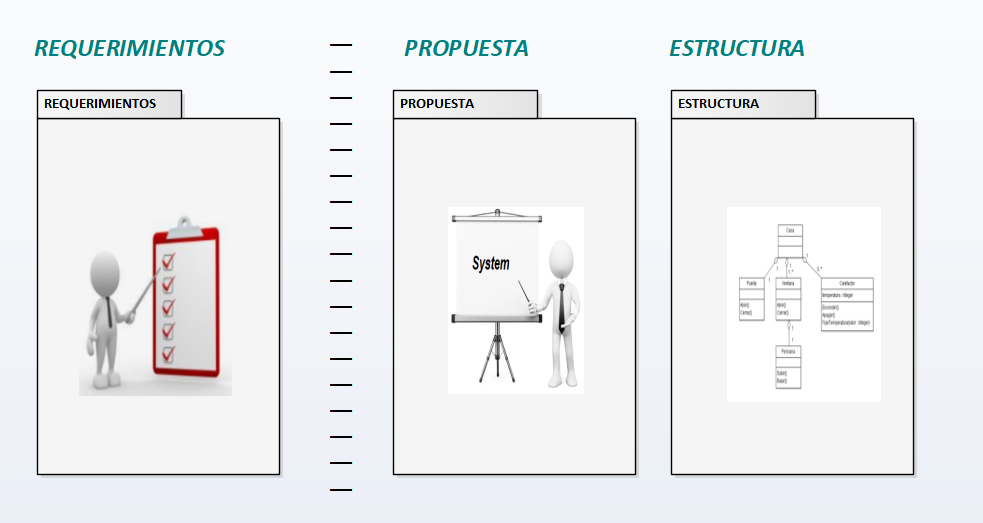

¿Qué es lo que quiere el cliente? Se debe enlistar todos los requerimientos o necesidades del Cliente.
¿Qué se Propone frente a lo que quiere el cliente? Se debe diseñar un diagrama que represente la lógica de resolución del Problema.
¿Cómo se implementará la Propuesta? Debe diseñarse la estructura de carpetas y archivos a crear.
